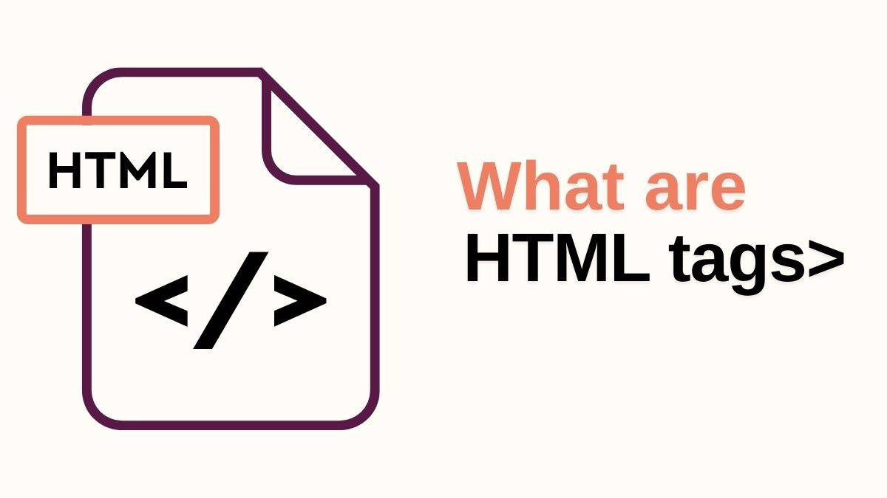
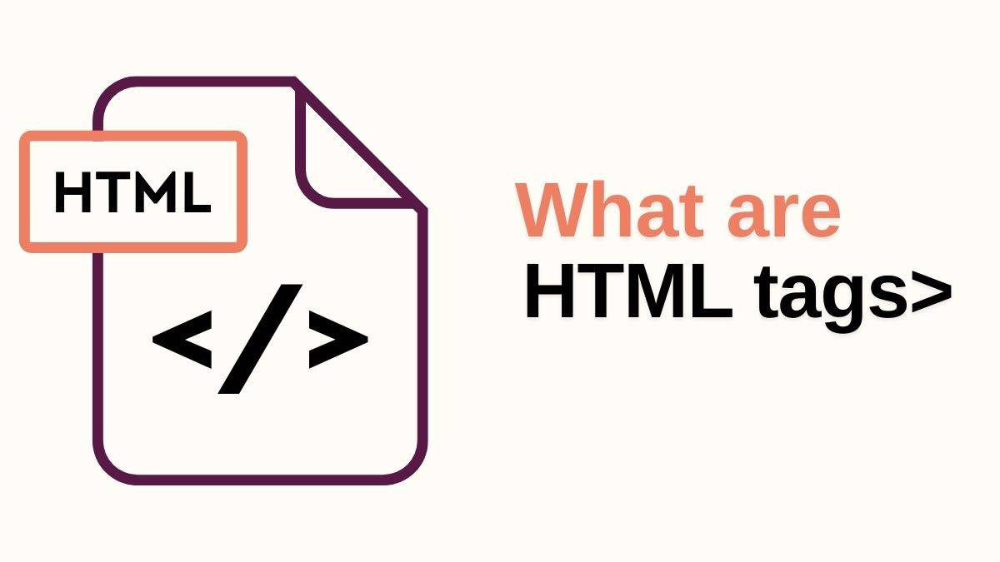

HTML was invented by Sir Tim Berners-Lee in 1989 at CERN (The European
Organization for Nuclear Research). HTML refers to
Hypertext Markup
Language. HTML is the standard markup language for creating pages. HTML
elements tell the browser how to
display the content.
 



The World Wide Web (WWW) traces its root to ARPANET (Advanced Research
Projects Agency Network) which was invented in the late 1960s.
ARPANET was a network for transmitting data between computers. In
1989, Tim Berners-Lee developed HTTP (Hypertext Transfer Protocol) the
first web server and the first web browser, world wide web (www).


HTTP transfers data across the web. In the early stages, websites were
simple and static consisting of text with a few images. By the mid 1990s,
browsers
and other programming languages like JavaScript were
introduced to make web pages more dynamic, user driven and more popular.
The web operates on a Client-
Server model. Clients (are typically web browsers) that sends requests web
pages and servers (computers that store web data) respond by sending the
requested information
back to the clients.